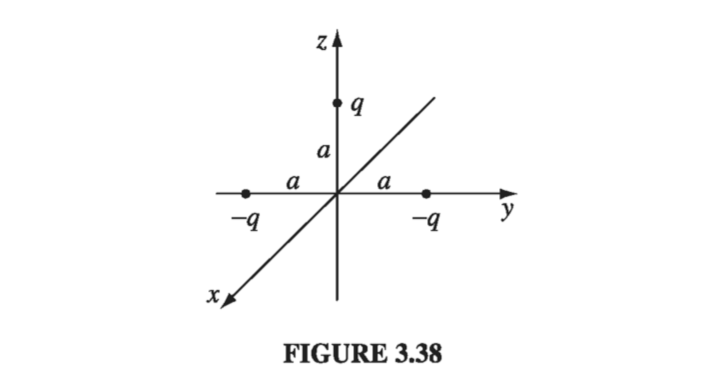

And our general solution will be an infinite series over k. But we have to now be careful, because previously we've expressed our general solution in terms of strictly non-zero k, but here we have k=0, which gives us a constant solution
k=0:S(s)=Cs0+Ds0=const.
But we should get two solutions for a second-order ordinary differential equation. If we go back to the differential equation for S,
Now what about for Φ? Looking at the k = 0 case for the Φ ODE,
dϕ2d2Φ=−k2Φ=0 for k=0dϕdΦ= const. =B→Φ(ϕ)=Bϕ+A
But this doesn't meet our periodicity requirement! This isn't a physically acceptable solution. For k = 0, Φ=B is the only 'physically acceptable' solution (we discard Bϕ+A out of hand.)
We've only been asked for the general solution in cylindrical coordinates (from which we can tell that our solution is independent of a), and we must be given boundary conditions in order to solve for the constants ak,bk.
Problem 3.27
A sphere of radius R, centered at the origin, carries charge density ρ(r,θ)=kr2R(R−2r)sinθ where k is a constant, and r,θ are the usual spherical coordinates. Find the approximate potential for points on the z axis, far from the sphere.
We are asked for the approximate potential for points on the z-axis far from the charge distribution, so we'll calculate the terms of our potential from Eq 3.95, and stop when we find the first non-zero term, replacing θ for α and z for r as we go.
V(r)=4πϵ01n=0∑∞r(n+1)1∫(r′)Pn(cosα)ρ(r′)dτ′
Let's start with the monopole term. The integral we have to calculate is simply the charge density integrated over the charge distribution
In Ex. 3.9, we derived the exact potential for a spherical shell of radius R, which carries a surface charge σ=kcosθ. a) Calculate the dipole moment of this charge distribution. b) Find the approximate potential, at points far from the sphere, and compare the exact answer (Eq 3.87). What can you conclude about the higher multipoles?
By the symmetry of the problem, p is going to be in the z-direction: p=pz^;p=∫zρdτ→∫zσda.
Show that the electric field of a 'pure' dipole can be written in the coordinate-free form math \vec{E_{dip}} = \frac{1}{4 \pi \epsilon_0} \frac{1}{r^3} [3 (\vec{p} \cdot \vu{r}) \vu{r} - \vec{p} ]math
We still assume the dipole is pointing in the z-direction and start with spherical coordinates, and then move to a coordinate-free system
p=pz^
p=prr^+pθθ^+pϕϕ^
Since p is in the z-direction, we can safely say pϕ=0
pr=p⋅r^=pcosθpθ=p⋅θ^=−psinθp=pcosθr^−psinθθ^
So we can directly check this expression against the expression we got as Eqn 3.103 (Edip(r,θ)=4πϵ0r3p(2cosθr^+sinθθ^):
Three point charges are located as shown in Fig 3.38, each a distance a from the origin. Find the approximate electric field at points far from the origin. Express your answer in spherical coordinates, and include the two lowest orders in the multipole expansion.

We'll get to the electric field by writing down the multipole expansion of the potential, and then using the approximate potential to get the electric field. The total charge is -q, so the monopole term will be
Vmon=4πϵ01r1(−q)
The dipole moment is given by
p=i=1∑3qiri=(−q)ay^+(−q)a(−y^)+qaz^=qaz^
The dipole term in the multipole expansion of V is then